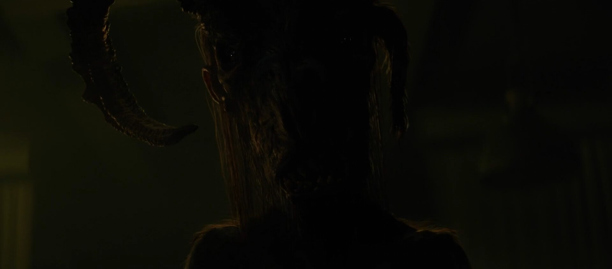
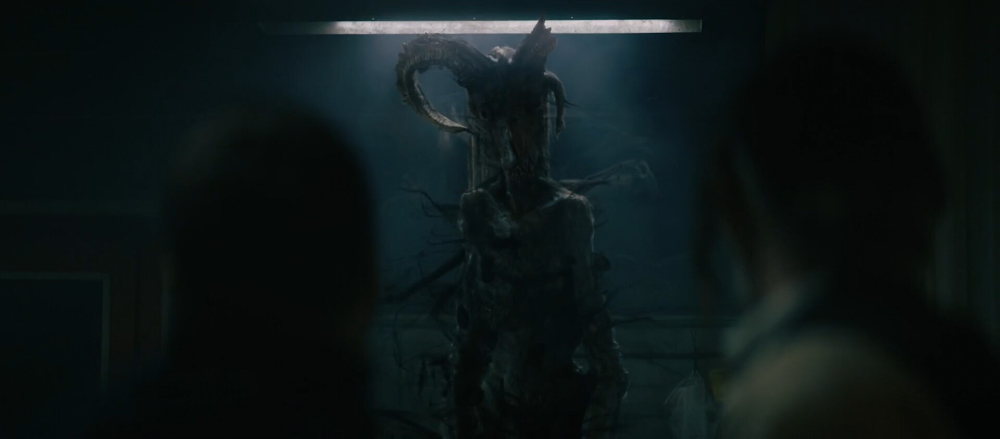

The torchlight was a mesh light with a geo generated from matchmoveSome pretty silouhette; my lighting was much brigther but the compositor did real good here.

When she smile back at you 🥰I think this was the fastest lighting I did haha.Used lights with animated transform on this one to fake the flames movement. Lights were constrained to animated locators created in Maya with a noise expression (to get live preview).Through the fire and flames 🤘

I remember this shot being much more tricky to get right; especially considering the wall interraction that required shadow catching.
The Offering (2023)
My first movie credit ! A classical horror movie with a sick humanoid goat monster.
I was working as a Lighting TD at WWFX UK for this project and was responsible for lighting on most of the shots with the creature.
A bit sad that the screenshots clip are so compressed, but you know dark films and video codec compression ...
As we were a pretty small team here was everyone at WORLDWIDE FX UK for this project:
VFX Supervisor: RAN MANOLOV, MILEN PISKULIYSKI
Senior Producer: MARIANO MELMAN CARRARA
VFX Production Coordinator: BRECHJE HOOGERS
2D Supervisor: LEONARDO PAOLINI
Art direction: RAN MANOLOV
Modelling: LEANDRO BENIGNO, IAN NAVARRO GUTIERREZ
Texturing: FAYE MANTZOURANI, MILEN PISKULIYSKI
Lighting TD: KLEISI BEGAJ, LIAM COLLOD
Matchmove & Tracking: VICTOR FARAG
Paint & Roto: KIRTAN TAAK, MICHAEL CASAL
Compositing: MARK MILLENA, KIRTAN TAAK, MICHAEL CASAL
The Offering: Directed by Oliver Park. With Nick Blood, Emily Wiseman, Paul Kaye, Allan Corduner. A family struggling with loss find themselves at the mercy of an ancient demon trying to destroy them from the inside.